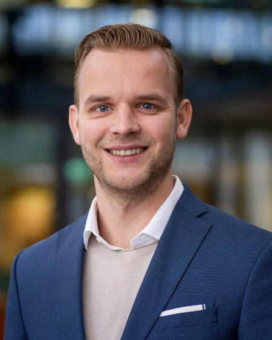
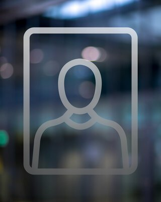
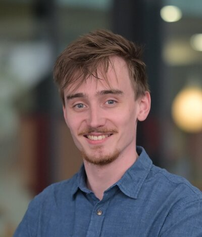

Team
PhD Candidates
I supervise PhD candidates working on fundamental and applied challenges in precision mechatronics. Each project is driven by a concrete engineering problem from industry or science, and aims to generate new knowledge that is validated through hardware.
Current PhD Candidates

Bas Huisman
Since 2024
Works on the design of an active wafer table that enables local compensation of wafer deformations. The table consists of multiple thin layers of piezoelectric material, allowing both in-plane and out-of-plane corrections. Key challenges lie in validating deformations at the scale of single-digit nanometres and closing the feedback loop for real-time compensation. This technology is required to further scale down the size of integrated circuits.

Marin Jalšić
Since 2024
Works on active compensation of flow-induced vibrations in optical systems used in lithography. Cooling flows introduce disturbances that cannot be sufficiently mitigated by passive means alone. The project covers vibration transmission path modelling in cooling circuits (including electro-mechano-acoustic coupling), the design of actuation systems for waterline acoustics, and robust active noise control approaches.

Michiel Collignon
Since 2026
Works on inerters in high-tech mechatronic systems. An inerter provides a force proportional to the relative acceleration between its two terminals, extending the passive mechanical toolbox beyond springs and dampers. With all three elements, any desired passive mechanical network can be synthesised. A promising direction is improved vibration isolators for semiconductor manufacturing equipment, where passive solutions are preferred over active control loops.